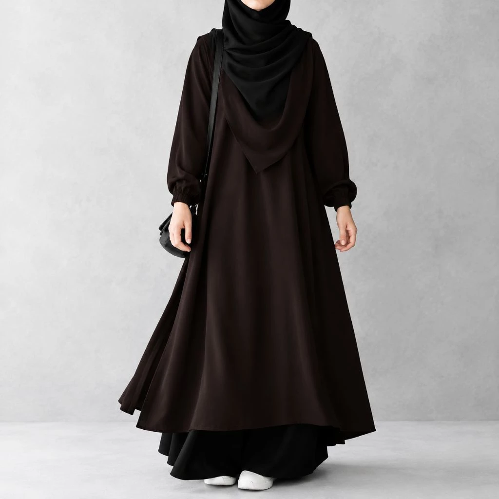

Abaya modern bisa menjadi pilihan bagi muslimah yang menyukai busana panjang dengan tampilan rapi dan mudah dipadukan. Satu abaya tidak harus digunakan dengan cara yang sama setiap kali. Melalui pilihan hijab, tas, alas kaki, dan lapisan luar, kamu bisa membuat suasana berbeda tanpa mengubah karakter modest-nya.
Kenali bentuk dan detail abaya
Sebelum styling, perhatikan potongan, bahan, panjang, bukaan, serta detail lengan. Abaya berpotongan longgar biasanya memberi ruang untuk layering, tetapi pastikan lapisan tambahan tidak membuat gerak terasa berat. Jika ada detail bordir atau tekstur, biarkan itu menjadi fokus utama.
Look 1: Kuliah dan perpustakaan
Pilih abaya polos warna hitam, navy, atau cokelat. Padukan dengan hijab yang nyaman, sneakers, dan tote bag. Simpan aksesori seminimal mungkin supaya praktis untuk berjalan dan membawa perlengkapan kuliah.
Look 2: Kajian atau kegiatan organisasi
Gunakan hijab yang lebih panjang sesuai preferensi, tas berstruktur, dan sepatu tertutup yang nyaman. Warna senada membantu tampilan terasa rapi. Jika membawa banyak barang, pilih tas dengan tali yang nyaman di bahu.
Look 3: Hangout setelah kelas
Abaya yang sama dapat terlihat lebih santai dengan tas bahu sederhana dan sneakers bersih. Kamu bisa bermain dengan warna hijab—misalnya krem untuk abaya gelap atau warna dusty untuk nuansa lebih lembut—tanpa perlu menambah banyak aksesori.
Look 4: Acara semi-formal
Untuk acara yang sedikit lebih formal, pilih hijab dengan finishing rapi dan tas kecil yang tetap fungsional. Jika abaya sudah memiliki tekstur atau aksen, hindari terlalu banyak detail tambahan agar tampilannya seimbang.
Memadukan warna dengan mudah
- Hitam + krem: kontras klasik yang mudah dipakai.
- Cokelat + beige: nuansa hangat yang terlihat harmonis.
- Navy + abu-abu: kombinasi sederhana untuk suasana kampus.
- Maroon + warna netral: aksen warna yang tetap terasa rapi.
- Dusty pink + krem: pilihan lembut tanpa harus serba pink.
Kesalahan styling yang bisa dihindari
Jangan membeli aksesori baru hanya karena satu tren. Cek proporsi tas dan lapisan luar, pastikan panjang busana aman untuk berjalan, dan pilih alas kaki sesuai aktivitas. Kenyamanan dan kebutuhan harian tetap lebih penting daripada meniru tampilan orang lain persis.
Sejumlah liputan modest fashion Indonesia pada 2026 menyoroti abaya dengan siluet longgar dan pilihan styling yang lebih fleksibel. Jadikan tren tersebut referensi awal, lalu sesuaikan dengan selera, aktivitas, dan anggaranmu sendiri.